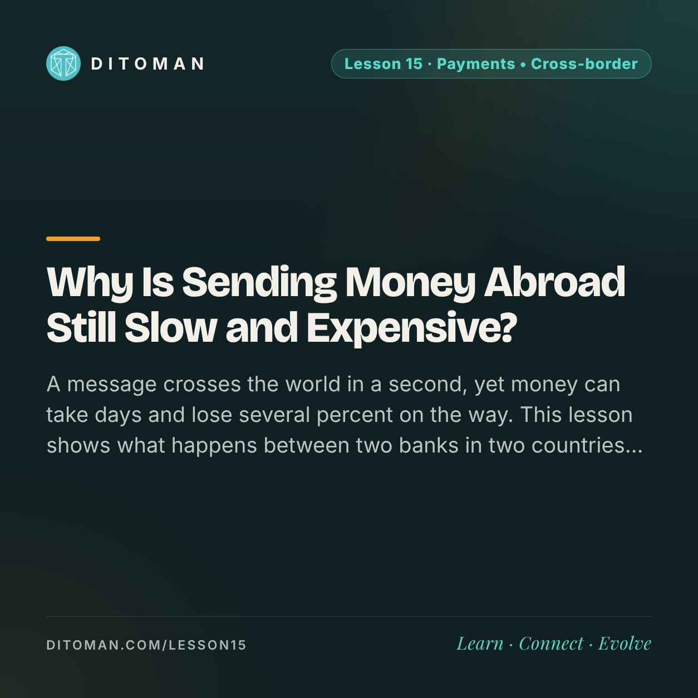

Pourquoi envoyer de l'argent à l'étranger reste-t-il lent et cher ?
چرا فرستادن پول به یک کشور دیگر هنوز سخت و گران است؟
Un message traverse le monde en une seconde, mais l'argent peut mettre des jours et perdre plusieurs pour cent en route. Cette leçon montre ce qui se passe entre deux banques de deux pays, où se cache le coût et ce que les stablecoins changent et ne changent pas.
یک پیام در یک ثانیه به آن سر دنیا میرسد، ولی پول ممکن است چند روز در راه باشد و چند درصدش هم کم شود. این درس نشان میدهد میان دو بانک در دو کشور چه میگذرد، هزینه کجا پنهان است و استیبلکوینها چه چیزی را عوض میکنند و چه چیزی را نه.
Contenu de la leçon
محتوای درس
Lisez la leçon en anglais ou en persan.
درس را به فارسی یا انگلیسی بخوانید.
Un travailleur à l'étranger envoie 200 dollars à sa famille. Une étudiante doit payer des frais d'université dans un autre pays. Une petite entreprise paie un fournisseur à l'étranger. Tous trois ont la même surprise : le transfert prend des jours et une part visible de l'argent disparaît en route.
Dans un pays, la leçon 14 a montré un seul réseau reliant toutes les banques. Entre pays, un tel réseau n'existe pas. Ce seul fait explique presque tout dans cette leçon.
01. L'argent ne voyage pas
La première chose à savoir, c'est que l'argent ne traverse pas réellement la frontière. Ce qui la traverse est un message, puis les banques ajustent leurs comptes.
Si la banque A d'un pays veut payer la banque B d'un autre, les deux ont besoin d'un endroit où chacune a un compte. En général, c'est une grande banque internationale, appelée banque correspondante. Le compte de la banque A y diminue, celui de la banque B augmente, et le paiement est fait.
Quand les deux banques n'ont pas de correspondant commun, le paiement passe par deux ou trois banques d'affilée. Chaque étape ajoute du temps, des frais et un contrôle de conformité.
02. Ce qu'est SWIFT, et ce qu'il n'est pas
SWIFT est un réseau de messagerie sécurisé que plus de 11 000 institutions financières dans plus de 200 pays utilisent pour s'envoyer des instructions de paiement. Il a été fondé en 1973.
SWIFT transmet l'instruction. Il ne détient ni ne déplace l'argent. L'argent passe par les comptes de correspondants décrits plus haut. C'est aussi pourquoi être coupé de SWIFT pèse tant sur les banques d'un pays : sans les messages, la voie normale est fermée.
- 1L'expéditeur paie sa banque en monnaie locale.
- 2La banque convertit la devise à son propre taux et envoie une instruction, souvent via SWIFT.
- 3Une banque correspondante déplace le solde entre les comptes des deux banques. Il peut y en avoir plusieurs.
- 4Chaque banque fait ses vérifications et peut prélever des frais.
- 5La banque du destinataire crédite le compte, des heures ou des jours plus tard.
03. Où se cache le coût
La Banque mondiale suit le coût d'un envoi de 200 dollars entre pays. Début 2025, la moyenne mondiale était d'environ 6,5 %, plus du double de l'objectif des Nations unies de 3 %. Les banques étaient le canal le plus cher et les services numériques le moins cher.
Ce coût a trois composantes.
Les frais affichés : les frais que vous voyez à l'envoi.
La marge sur le taux de change : le prestataire convertit à un taux moins bon que le marché et garde la différence. C'est souvent la plus grosse part, et elle n'apparaît sur aucun reçu.
Frais en route : les banques intermédiaires peuvent chacune prélever des frais, si bien qu'il arrive moins que ce qui a été envoyé.
Pour comparer les prestataires, ignorez les frais affichés et posez une question : si je paie ce montant, combien arrive exactement dans l'autre devise ?
04. Pourquoi c'est lent
Les banques de fuseaux horaires différents ouvrent à des heures différentes, et beaucoup de systèmes de paiement ferment la nuit et le week-end. Chaque banque du parcours doit aussi vérifier le paiement au regard des règles anti-blanchiment et des sanctions. Un détail flou peut bloquer un paiement pendant des jours.
05. L'ancienne voie informelle
Bien avant les banques, les marchands utilisaient des réseaux de confiance. L'expéditeur paie un intermédiaire dans une ville, et l'associé de cet intermédiaire dans une autre ville paie le destinataire. Les deux intermédiaires règlent leurs comptes plus tard. Dans de nombreux pays, cela s'appelle la hawala, et elle déplace encore de grosses sommes là où les banques sont lentes, chères ou absentes.
Ce peut être rapide et bon marché. Cela dépend aussi entièrement de l'honnêteté de l'intermédiaire et, dans bien des endroits, échappe à toute protection légale.
06. Ce que changent les stablecoins
Un stablecoin en dollars peut passer d'un portefeuille à un autre en quelques minutes, à toute heure, pour de faibles frais de réseau. Aucune banque correspondante n'intervient à cette étape. C'est la principale raison pour laquelle les stablecoins servent de plus en plus aux paiements internationaux.
Mais les parties difficiles se déplacent aux deux bouts. L'expéditeur doit d'abord convertir sa monnaie locale en token, et le destinataire doit le reconvertir, généralement via une plateforme ou un intermédiaire avec ses propres frais, taux et règles. Et le token apporte les risques de la leçon 11 : l'émetteur, la réserve et la sortie.
Un stablecoin peut donc raccourcir le milieu du trajet. Il ne supprime ni la première ni la dernière étape.
Ce qu'il faut en retenir
L'argent ne traverse pas les frontières. Les messages, oui, et les banques ajustent les comptes qu'elles détiennent les unes chez les autres.
SWIFT transmet des instructions. Les banques correspondantes déplacent les soldes.
Le coût réel, ce sont les frais plus la marge sur le taux de change. Demandez combien arrive.
Les retards viennent des fuseaux horaires, des systèmes fermés et des contrôles de conformité.
Les stablecoins accélèrent le milieu du trajet. L'entrée et la sortie restent là où se trouvent le coût et le risque.
کارگری در خارج ۲۰۰ دلار برای خانوادهاش میفرستد. دانشجویی باید شهریهی دانشگاهی را در کشوری دیگر بپردازد. یک کسبوکار کوچک به تأمینکنندهای آن طرف دنیا پول میدهد. هر سه با یک چیز روبهرو میشوند: انتقال چند روز طول میکشد و بخشی از پول در راه کم میشود.
درس ۱۴ نشان داد داخل یک کشور، یک شبکه همهی بانکها را به هم وصل میکند. میان کشورها چنین شبکهای وجود ندارد. تقریباً همهی این درس از همین یک واقعیت میآید.
۰۱. پول سفر نمیکند
اولین نکته این است که پول واقعاً از مرز رد نمیشود. چیزی که رد میشود یک پیام است و بعد بانکها دفترهایشان را اصلاح میکنند.
اگر بانک «الف» در یک کشور بخواهد به بانک «ب» در کشوری دیگر پول بدهد، هر دو به جایی نیاز دارند که در آن حساب داشته باشند. اینجا معمولاً یک بانک بزرگ بینالمللی است که به آن بانک کارگزار میگویند. حساب بانک «الف» نزد او کم میشود، حساب بانک «ب» زیاد میشود و پرداخت انجام شده است.
وقتی دو بانک کارگزار مشترکی ندارند، پرداخت از دو یا سه بانک پشت سر هم میگذرد. هر ایستگاه زمان، کارمزد و یک بررسی قانونی اضافه میکند.
۰۲. سوئیفت چه هست و چه نیست
سوئیفت یک شبکهی پیامرسان امن است که بیش از ۱۱ هزار مؤسسهی مالی در بیش از ۲۰۰ کشور، دستور پرداخت را با آن برای هم میفرستند. این شبکه در سال ۱۹۷۳ تأسیس شد.
سوئیفت دستور را میبرد. پول را نگه نمیدارد و جابهجا هم نمیکند. پول از راه همان حسابهای کارگزاری که گفتیم جابهجا میشود. برای همین قطع شدن از سوئیفت برای بانکهای یک کشور اینقدر مهم است: بدون پیام، مسیر معمول بسته میشود.
- ۱فرستنده به پول محلی به بانک خودش پرداخت میکند.
- ۲بانک ارز را با نرخ خودش تبدیل میکند و دستور پرداخت را، اغلب از راه سوئیفت، میفرستد.
- ۳بانک کارگزار موجودی را میان حساب دو بانک جابهجا میکند. ممکن است بیش از یک بانک در راه باشد.
- ۴هر بانک بررسیهای خودش را انجام میدهد و ممکن است کارمزدی کم کند.
- ۵بانک گیرنده چند ساعت یا چند روز بعد پول را به حساب مینشاند.
۰۳. هزینه کجا پنهان است
بانک جهانی هزینهی فرستادن ۲۰۰ دلار میان کشورها را دنبال میکند. در اوایل ۲۰۲۵ میانگین جهانی حدود ۶٫۵ درصد بود؛ بیش از دو برابر هدف ۳ درصدی سازمان ملل. بانکها گرانترین راه بودند و سرویسهای دیجیتال ارزانترین.
این هزینه سه بخش دارد.
کارمزد اعلامشده: مبلغی که موقع ارسال میبینیم.
فاصلهی نرخ تبدیل: فرستندهی پول ارز را با نرخی بدتر از نرخ بازار تبدیل میکند و تفاوت را برمیدارد. این بخش اغلب بزرگتر است و روی هیچ رسیدی نمیآید.
کارمزدهای میان راه: هر بانک واسطه ممکن است مبلغی کم کند و در نتیجه کمتر از مبلغ فرستادهشده به مقصد برسد.
برای مقایسه، کارمزد تبلیغشده را کنار بگذارید و فقط یک چیز بپرسید: اگر این مبلغ را بدهم، دقیقاً چقدر به پول مقصد به دست گیرنده میرسد؟
۰۴. چرا کند است
بانکها در منطقههای زمانی مختلف در ساعتهای متفاوتی بازند و بسیاری از سامانههای پرداخت شبها و آخر هفته بستهاند. هر بانکِ مسیر هم باید پرداخت را با قواعد پولشویی و تحریم بسنجد. یک جزئیات نامشخص میتواند پرداخت را چند روز نگه دارد.
۰۵. راه قدیمی و غیررسمی
خیلی پیش از بانکها، بازرگانان از شبکههای اعتماد استفاده میکردند. فرستنده در یک شهر به یک صراف پول میدهد و همکار آن صراف در شهری دیگر به گیرنده میپردازد. دو صراف بعداً میان خودشان حساب را صاف میکنند. این همان «حواله» است و هنوز هر جا بانک کند، گران یا در دسترس نباشد، مبلغهای بزرگی را جابهجا میکند.
میتواند سریع و ارزان باشد. در عوض کاملاً به درستکاری صراف بستگی دارد و در بسیاری جاها بیرون از حمایت قانونی است.
۰۶. استیبلکوین چه چیزی را عوض میکند
یک استیبلکوین دلاری میتواند در چند دقیقه، در هر ساعتی و با کارمزد شبکهی اندک، میان دو کیف پول جابهجا شود. در این مرحله بانک کارگزاری در کار نیست. دلیل اصلی اینکه استیبلکوینها روزبهروز بیشتر در پرداخت بینالمللی به کار میروند همین است.
ولی بخشهای سخت به دو سرِ مسیر منتقل میشود. فرستنده اول باید پول محلی را به توکن تبدیل کند و گیرنده باید آن را دوباره به پول تبدیل کند؛ معمولاً از راه صرافی یا واسطهای که کارمزد، نرخ و قواعد خودش را دارد. توکن هم ریسکهای درس ۱۱ را با خودش میآورد: ناشر، پشتوانه و راه خروج.
پس استیبلکوین میتواند میانهی سفر را کوتاه کند. قدم اول و آخر را حذف نمیکند.
چه برداشتی کنیم
پول از مرز رد نمیشود. پیام رد میشود و بانکها حسابهایی را که نزد هم دارند اصلاح میکنند.
سوئیفت دستور را میبرد. بانکهای کارگزار موجودی را جابهجا میکنند.
هزینهی واقعی، کارمزد بهاضافهی فاصلهی نرخ تبدیل است. بپرسید چقدر به مقصد میرسد.
تأخیر از تفاوت ساعت، سامانههای بسته و بررسیهای قانونی میآید.
استیبلکوین میانهی مسیر را سریع میکند. هزینه و ریسک هنوز در ورود و خروج است.
Voir la voie crypto en détail
مسیر کریپتویی را با جزئیات ببینید
La leçon 16 suit un transfert crypto de la même façon : adresse, réseau, frais et confirmation. La leçon 11 explique ce qui se trouve derrière les stablecoins utilisés pour ces paiements.
درس ۱۶ یک انتقال کریپتویی را به همین شکل دنبال میکند: آدرس، شبکه، کارمزد و تأیید. درس ۱۱ توضیح میدهد پشت استیبلکوینهایی که در این پرداختها به کار میروند چه چیزی هست.
Notions clés
مفاهیم کلیدی
- Paiement transfrontalier
- Banque correspondante
- SWIFT
- Transfert de fonds
- Marge sur le taux de change
- Frais des intermédiaires
- Contrôles de conformité
- Hawala
- Entrée et sortie (on-ramp et off-ramp)
- پرداخت بینالمللی
- بانک کارگزار
- سوئیفت
- حوالهی کارگران مهاجر
- فاصلهی نرخ تبدیل
- کارمزد بانکهای واسطه
- بررسیهای قانونی
- حواله
- ورود و خروج از کریپتو
Objectifs d'apprentissage
اهداف یادگیری
- Expliquez pourquoi l'argent lui-même ne franchit pas de frontière.
- Décrivez ce que fait une banque correspondante.
- Dire ce que fait SWIFT et ce qu'il ne fait pas.
- Identifiez les trois parties du coût d'un virement international.
- Expliquez quelle partie du trajet un stablecoin raccourcit et quelles parties restent.
- توضیح دهید چرا خودِ پول از مرز رد نمیشود.
- بگویید بانک کارگزار چه کاری میکند.
- بگویید سوئیفت چه کاری میکند و چه کاری نمیکند.
- سه بخش هزینهی یک انتقال بینالمللی را پیدا کنید.
- توضیح دهید استیبلکوین کدام بخش مسیر را کوتاه میکند و کدام بخشها سر جایشان میمانند.
Quiz
آزمونک
Voyez ce que vous avez retenu. La réponse est sous chaque question.
ببین چه چیزی در ذهنت مانده. پاسخ زیر هر پرسش آمده است.
Question 1
پرسش ۱
Que fait SWIFT ?
سوئیفت چه کاری میکند؟
A. Il détient l'argent des banques
الف. پول بانکها را نگه میدارد
B. Il transmet des instructions de paiement entre institutions
ب. دستور پرداخت را میان مؤسسهها میبرد
C. Il fixe les taux de change
ج. نرخ ارز را تعیین میکند
Bonne réponse : B
پاسخ درست: ب
Question 2
پرسش ۲
Où se cache le plus souvent le coût d'un transfert ?
هزینهی یک انتقال بیشتر کجا پنهان میشود؟
A. Dans la marge sur le taux de change
الف. در فاصلهی نرخ تبدیل
B. Dans le papier du ticket
ب. در کاغذ رسید
C. Dans la facture de téléphone du destinataire
ج. در قبض تلفن گیرنده
Bonne réponse : A
پاسخ درست: الف
Question 3
پرسش ۳
Qu'est-ce qu'une banque correspondante ?
بانک کارگزار چیست؟
A. Une banque qui imprime des devises
الف. بانکی که ارز خارجی چاپ میکند
B. Une banque où deux autres banques ont un compte
ب. بانکی که دو بانک دیگر هر دو در آن حساب دارند
C. Un bureau public qui approuve les virements
ج. ادارهای دولتی که انتقال را تأیید میکند
Bonne réponse : B
پاسخ درست: ب
Question 4
پرسش ۴
Quelle est la meilleure question pour comparer les services de transfert ?
بهترین پرسش برای مقایسهی سرویسهای انتقال پول کدام است؟
A. Quels sont les frais affichés ?
الف. کارمزد تبلیغشده چقدر است؟
B. Combien d'agences a-t-il ?
ب. چند شعبه دارد؟
C. Combien arrive exactement dans l'autre monnaie ?
ج. دقیقاً چقدر به پول مقصد میرسد؟
Bonne réponse : C
پاسخ درست: ج
Question 5
پرسش ۵
Quelle partie d'un paiement international un stablecoin ne supprime-t-il pas ?
استیبلکوین کدام بخش پرداخت بینالمللی را حذف نمیکند؟
A. Convertir la monnaie locale en token et inversement
الف. تبدیل پول محلی به توکن و برگرداندن آن
B. La banque correspondante à l'étape intermédiaire
ب. بانک کارگزار در مرحلهی میانی
C. La fermeture du week-end
ج. تعطیلی آخر هفته
Bonne réponse : A
پاسخ درست: الف
Sources
منابع
- Banque mondiale : Remittance Prices Worldwide
- SWIFT : qui sommes-nous
- BIS CPMI : programme sur les paiements transfrontaliers
- Nations unies : ODD 10, cible 10.c sur le coût des transferts de fonds
Le coût moyen provient du rapport Remittance Prices Worldwide de la Banque mondiale pour le premier trimestre 2025. Les trimestres suivants peuvent différer.
میانگین هزینه از گزارش «قیمت حواله در جهان» بانک جهانی برای فصل اول ۲۰۲۵ است. فصلهای بعد ممکن است فرق کند.
با هم دنبال میکنیمSuivez-nous
Les nouvelles leçons sont d'abord annoncées sur les canaux de Ditoman.
درسهای تازه اول در کانالهای دیتومان معرفی میشوند.